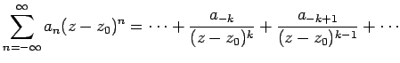
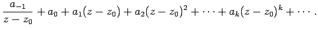
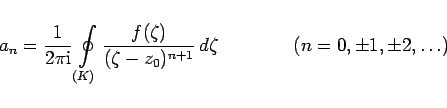
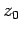
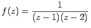
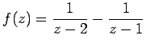

Inhalt Index DeskTop Bronstein

 Funktionentheorie Potenzreihenentwicklung analytischer Funktionen
Funktionentheorie Potenzreihenentwicklung analytischer Funktionen


Jede Funktion  , die im Innern eines Kreisringes zwischen zwei konzentrischen Kreisen mit dem Mittelpunkt z0 und den Radien r1 und r2 analytisch ist, kann in eine verallgemeinerte Potenzreihe, die LAURENT-Reihe, entwickelt werden:
, die im Innern eines Kreisringes zwischen zwei konzentrischen Kreisen mit dem Mittelpunkt z0 und den Radien r1 und r2 analytisch ist, kann in eine verallgemeinerte Potenzreihe, die LAURENT-Reihe, entwickelt werden:
| f(z) | = |  | |
| + |  | (14.50a) |
|  | (14.50b) |
bestimmt. Mit K ist irgendein geschlossener Integrationsweg bezeichnet, der innerhalb des Kreisringgebiets r1 < | z | < r2 liegt und im Gegenuhrzeigersinn durchlaufen wird (s. Abbildung).
Ist das Gebiet G der Funktion f(z) umfassender als der Kreisring, dann ist der Konvergenzbereich der LAURENT-Reihe der größte in G enthaltene Kreisring um .
| Beispiel |
|
Für die Funktion , die im Ringgebiet 1<|z|<2 analytisch ist, soll eine LAURENT-Reihenentwicklung bezüglich z0=0 angegeben werden. Dazu kann man die Funktion f(z) durch Partialbruchzerlegung auf die Form  bringen. Durch einfache Umformung können diese beiden Terme als geometrische Reihen dargestellt werden, die gemeinsam in dem Ringgebiet 1< |z|<2 konvergieren. Man erhält: |